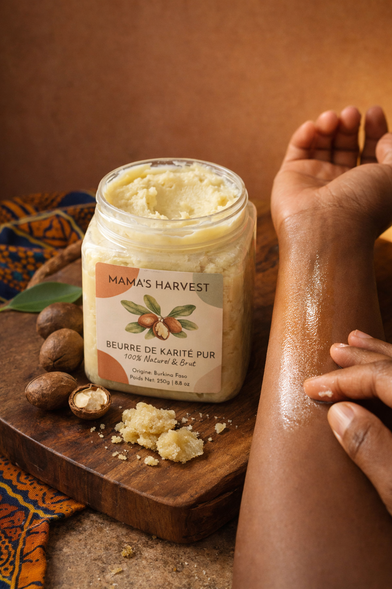
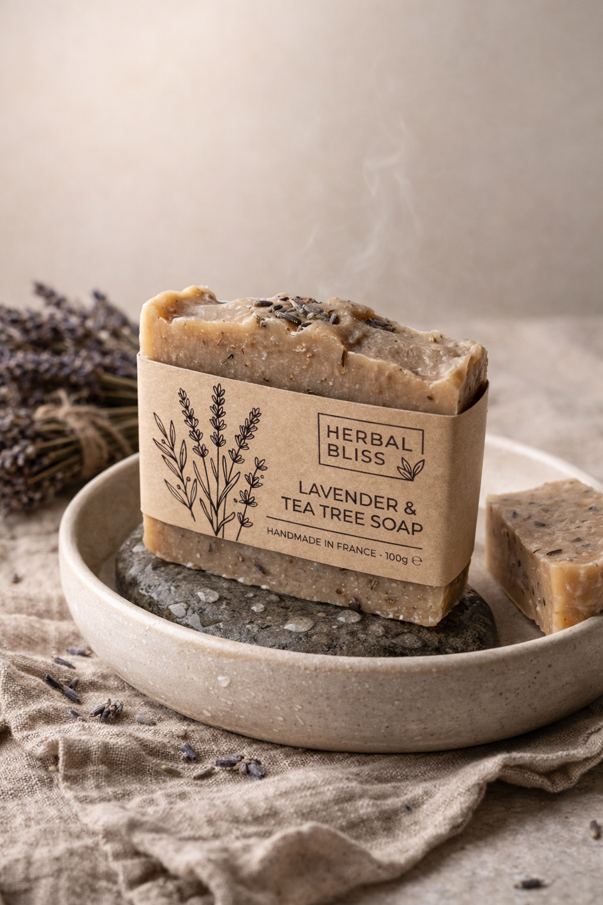
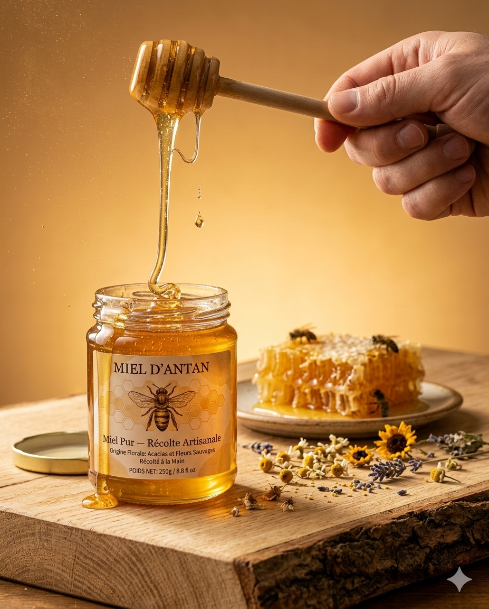
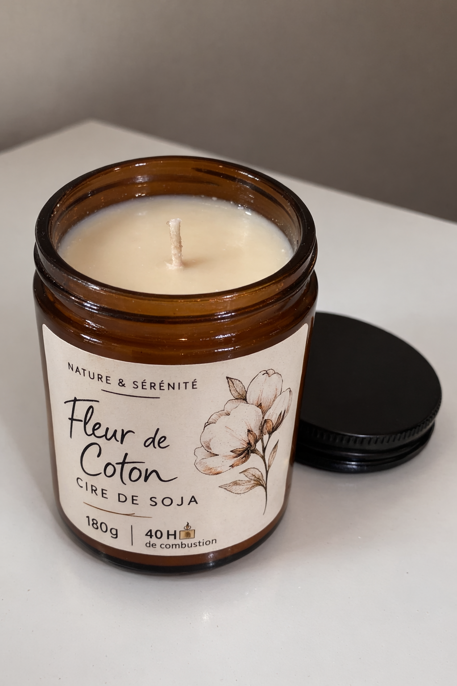
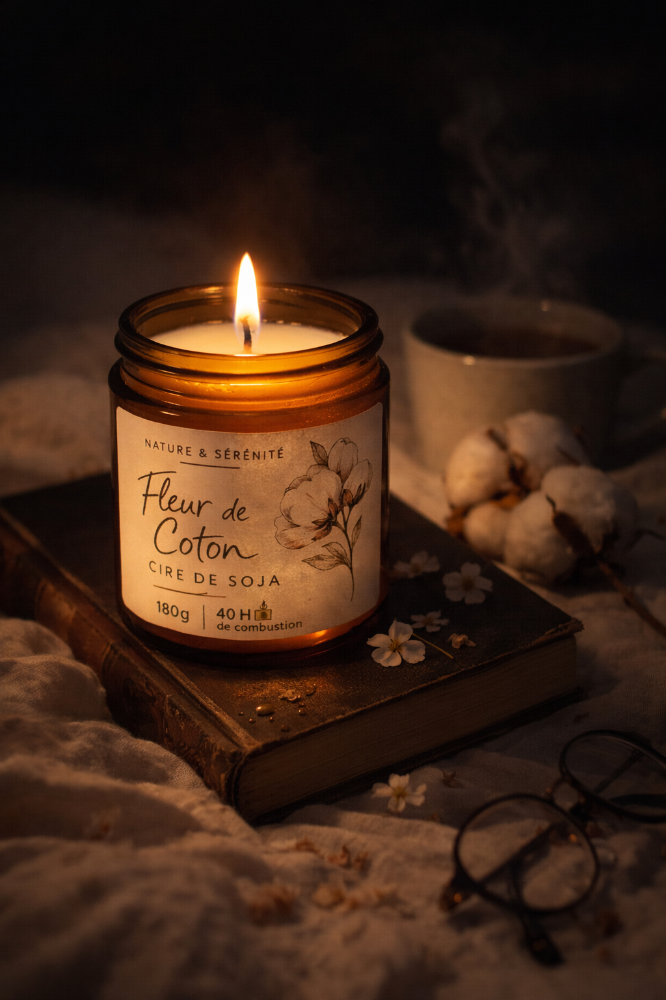

Ce qu'il te faut
ChatGPT ou Gemini
Les deux suffisent. Le principe reste le même : photo source, prompt propre, scène claire.
Une photo nette
Fond simple, produit bien visible, étiquette lisible. Plus la base est propre, plus le rendu tient.
Le prompt ci-dessous
Tu colles le template, tu ajustes quelques zones, puis tu laisses l'IA construire la scène.
Le prompt
Le kit repose sur un template modulaire : identité du produit, décor, lumière, angle, technique et bloc de verrouillage.
C'est modulaire
Les mêmes fondations servent à plusieurs familles de produits. Tu changes quelques zones, mais tu gardes le bloc qui protège l'identité du packaging.
5 produits, 5 transformations
Même logique, rendus différents. Chaque exemple garde la même structure et ne change que les parties utiles.


Beurre de karité
Ambiance naturelle chaude, lumière latérale douce, scène simple et premium.


Mélange d'épices
Contraste plus fort, particules en suspension, décor simple mais plus dramatique.


Savon artisanal
Rendu plus doux, lumière diffuse, ambiance plus spa et moins publicitaire.


Miel artisanal
Backlight chaud, matière plus dense, rendu plus gourmand et plus riche.


Bougie artisanale
Plan plus intime, ombres plus présentes, scène plus nocturne.
Envie de personnaliser ?
Chaîne ou communauté ?
Recevoir les prochains kits, ou rejoindre l'espace de discussion pour montrer ses essais.
La chaîne
Nouveaux kits, annonces, ateliers et prochains guides.
La communauté
Poser une question, partager un test et demander un retour.